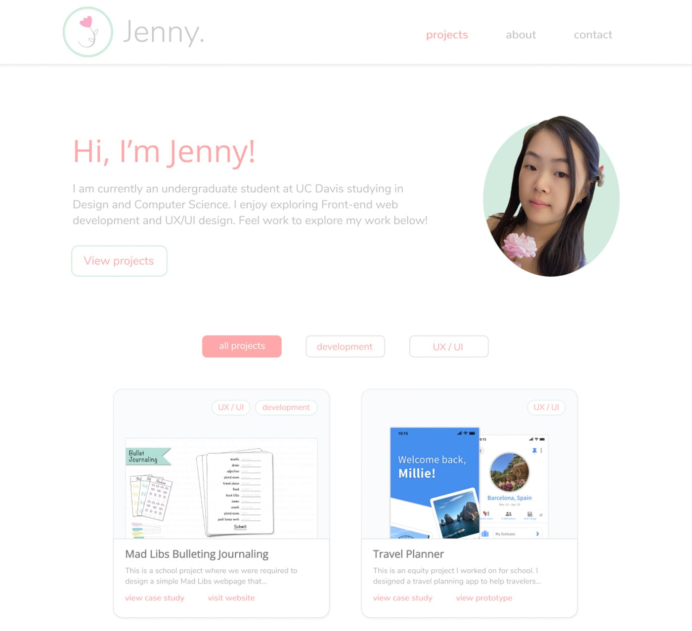
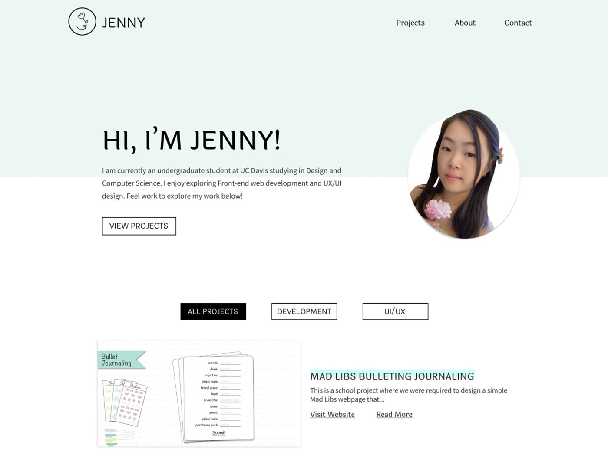
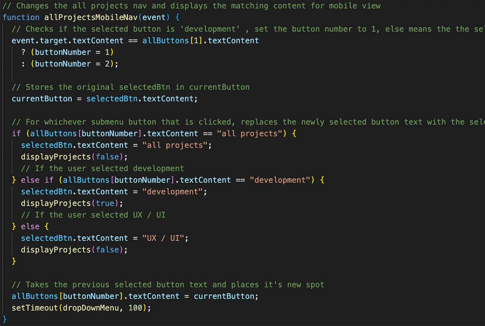
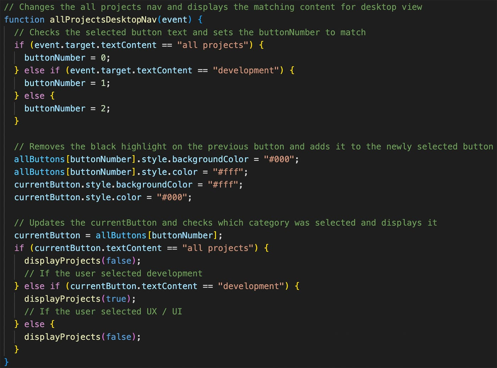

Jenny
My Portfolio
Figma | HTML | CSS | JavaScript
development
2022
User Interface
I wanted my portfolio to resemble my resume — look personalized yet professional and simple — and be subtly elegant to match my logo.
Digital Sketches
This was the first theme I designed. It was very colorful and pink, but also too plain and white. The paragraph texts were faded gray and in Nunito font. It didn't feel like a professional website and the font choice didn't feel right. Each project's design also felt too complicated and the entire page felt quite delicate.
For my revised design, I minimized the amount of pink and mainly used black and turquoise. I chose a more standard font for the paragraph texts, Source Sans and used Laila for the headings and buttons to add some elegance. I sharpened the corners for the buttons and images and simplified each project's layout. These choices made my portfolio look a lot simpler, professional, and legible.
Development
My portfolio website is responsive and was developed using HTML, CSS, and JavaScript.
Challenges
 The biggest part I struggled with was getting the "all projects", "development", and "UX/UI" button on the home page to function responsively. I wrote different JavaScript code for the mobile version and desktop version, but I couldn't figure out how to get each set of code to work for their certain viewport size. I discovered that there were JavaScript media queries I could use. But soon after I tried it out, I learned that you can't have different lines of code in different media queries because those code will get mixed up with one another.
My first solution was to add the different lines of mobile version code to the desktop version and vice versa, but this approach kept on causing errors. My second approach was to use the add and remove event listener methods by placing the desired function in the listener parameter. Originally the allPRojectsMobileNav( ) and allProjectsDesktopNav( ) functions had parameters, but because of this, I struggled to get the event listeners to work properly. I eventually worked around this by using the 'event' variable to grab what I needed.
Conclusion
I've learned so many new things about HTML, CSS, and JavaScript working on this portfolio. The JavaScript struggles I had allowed me to learn that two anonymous functions are two totally different functions and that media queries in JavaScript work differently than in CSS. I learned how to switch images depending on the viewport with HTML and how to set a background image without fixed dimensions.